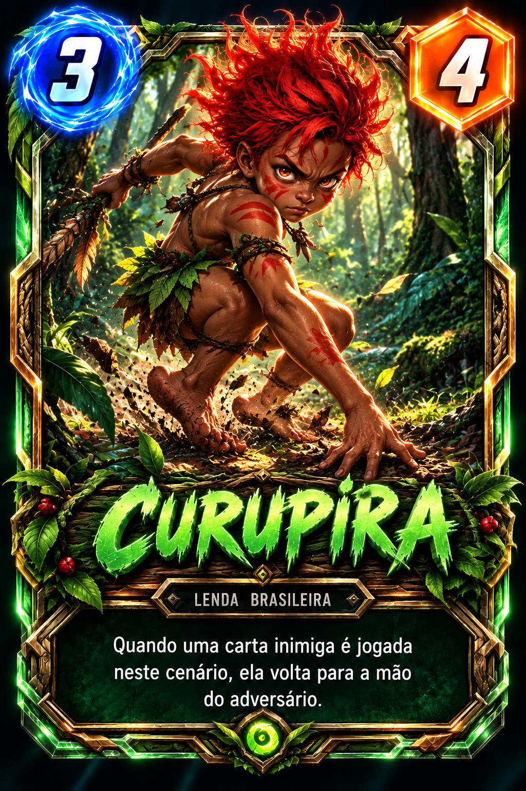

✦ MITOS BRASILEIROS · ESTRATÉGIA EM CARTAS
AS LENDAS
VÃO À BATALHA.
Reúna criaturas lendárias, domine três territórios e prove que conhece os segredos do folclore brasileiro.
30cartas na coleção
03territórios
06rodadas
✳LENDA VIVA
2CURUPIRAGuardião da mata
✦